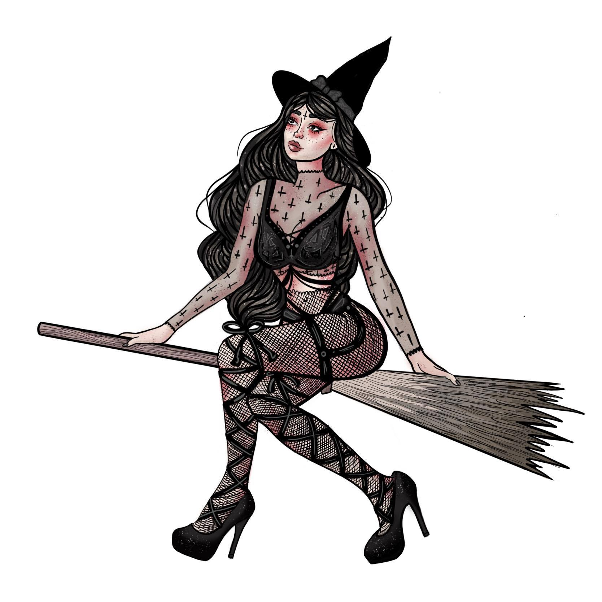
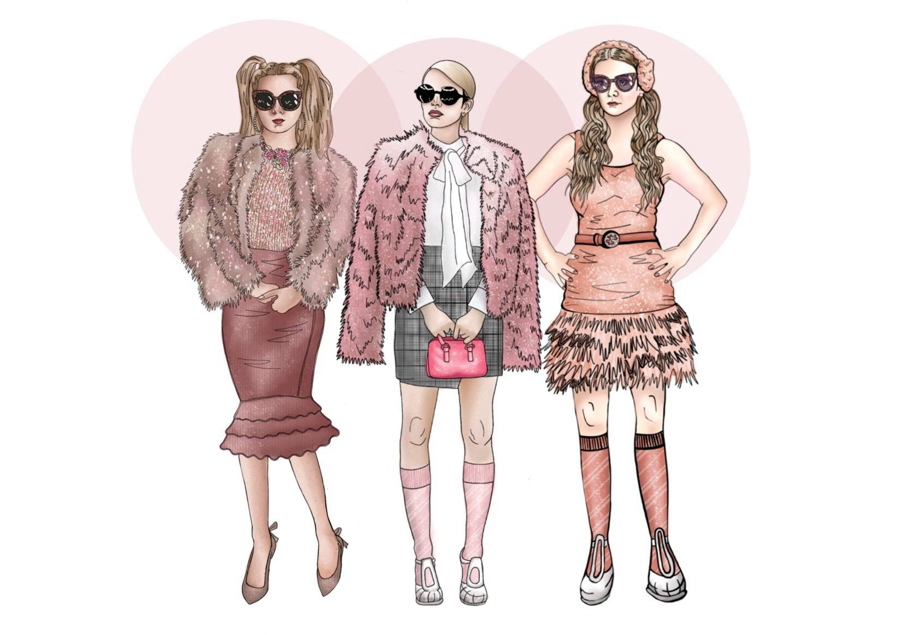
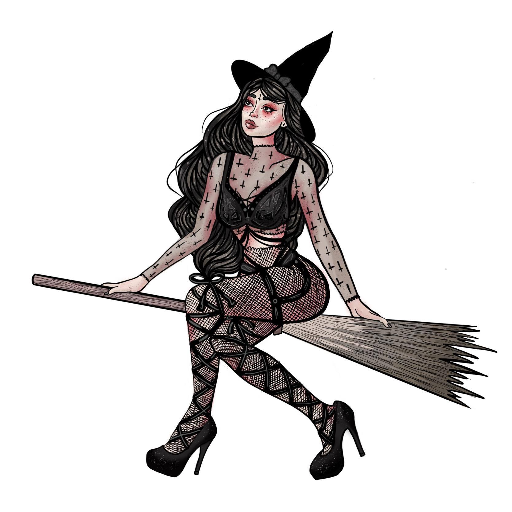
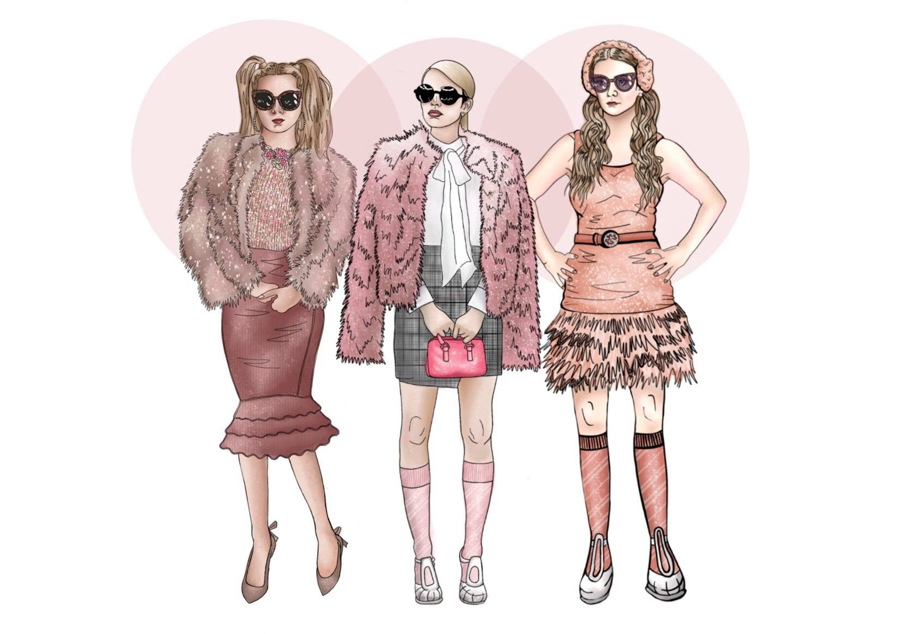
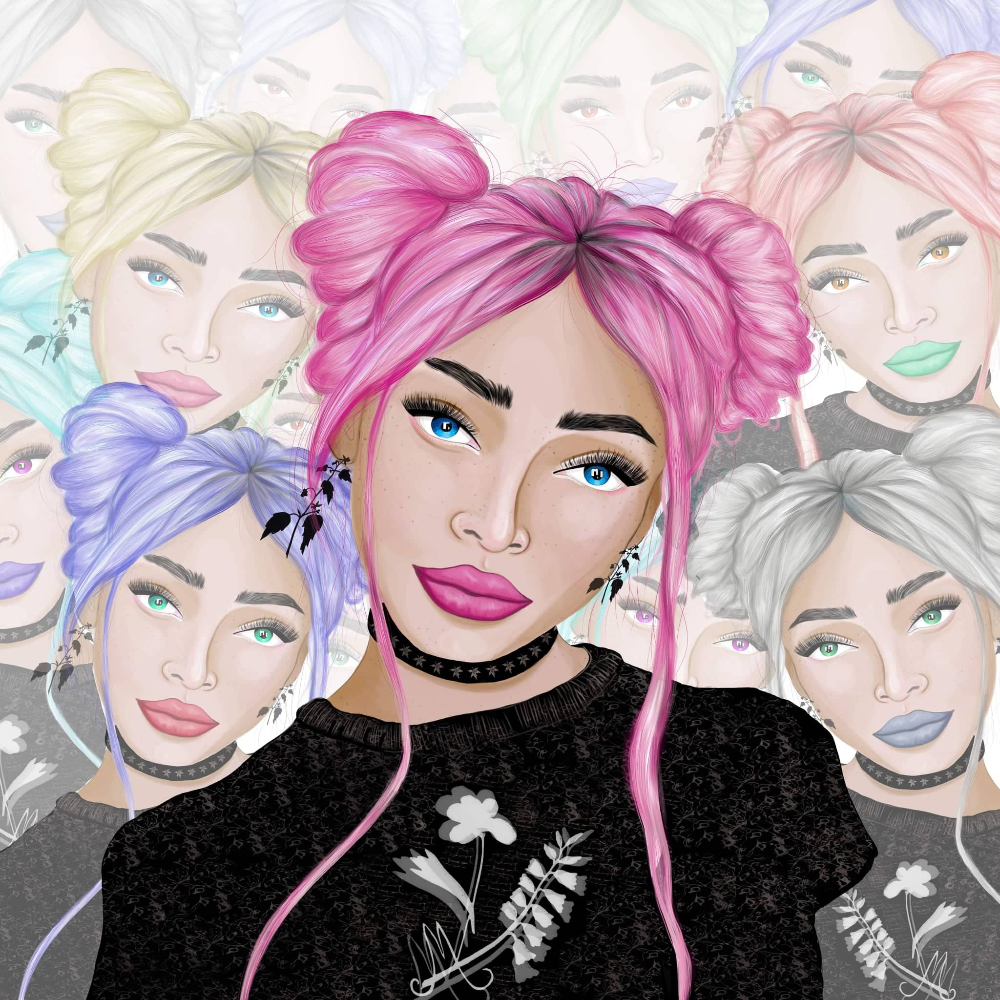
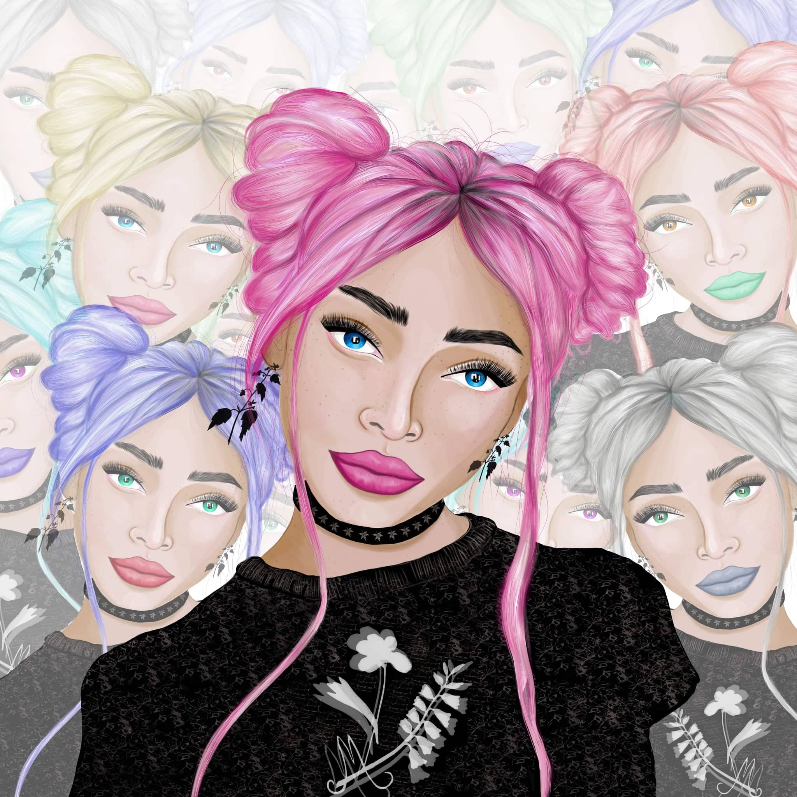

Madison Colvin
Digital Art
Exploration of Digial Design
An Intro to Digital Design
Art has always played a key role in my life, but it wasn't until I entered college that I viewed digital art as a viable means to create. Prior to college, I believed that art was confined to a piece of paper and pen. It wasn't until recent years that I stumbled upon a new medium: digital art. I fell in love with the flexibility and limitless options the medium presented.
My First Digital Project
I started out my venture into the digital art world by mixing my real life creations with my newfound digital art skill to create mixed media designs. My first experience with digital art was a project for my visual communications course. We were tasked with creating designs in the format of a children’s storybook.
These two images had to be in a foreign language of our choice.
I chose to create two designs in Hiragana, a subset of Japanese. To create these images, I drew the animals in watercolor, did a pen and ink
drawing for the background, and painted the lettering using a font I constructed. I then used photoshop to edit out the backgrounds and merge
the images into cohesive digital pieces.

Diversity Poster Contest
When I was beginning to test out this new form of art, I discovered a poster contest sponsored by my university. I decided to apply my newly discovered digital art skills and enter Western Washington University's annual Diversity Poster Contest. After a period of deliberation, my poster was selected as the first place winner and my poster design was hung throughout the University’s campus.
Digital Drawings
Like many others, 2020 brought many new challenges and surprises into my life. During the beginning of the pandemic, I found myself with much more free time and I decided to use this newfound time to explore creatively. Like the rest of the world, I found myself stuck at home with nothing to do, so I treated myself and bought something I always wanted: a drawing pad. With this new drawing pad I have been able to explore a new creative outlet. This is just the beginning of my digital art journey and am very thankful that I have discovered a new outlet to express my creativity.


 



 
